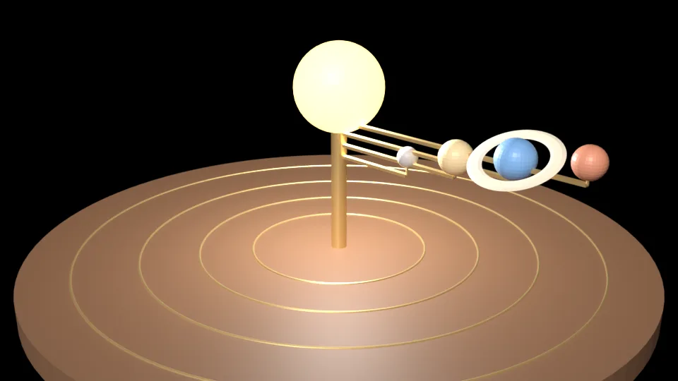

The brass orrery from Flywheel Forge, exported once to each format and drawn by every engine we could run, from the same camera at the same two moments of its animation. Each frame is scored against Blender's own path tracer. Every file passed its validator, and still, with default settings, four of the eight legs drew most of the frame pure white. Two glTF exporter flags fix three of them; the fourth is X3DOM's own.
The live scene on the left, in the engine you pick, animating and orbitable. On the right, Cycles at frame 1. Web legs only: Castle and Blender are desktop programs, so their frames above are stills.

| Finding | Who | Evidence | Fix |
|---|---|---|---|
| Blender's glTF exporter writes lights in physical units by default: the 3.0 key sun becomes 2,049 lux and the 400 W lamp 21,741 cd. With no exposure control, three.js, Babylon.js and Castle draw 53% of the frame pure white. | Blender 5.3.0 glTF exporter | SSIM 0.81 → 0.966 (three.js), 0.81 → 0.965 (Babylon), 0.81 → 0.936 (Castle) | export_import_convert_lighting_mode="COMPAT" |
| In the default ACTIONS mode, each object's action becomes its own glTF animation. Web engines play all four. Blender's own importer plays only the first and stashes the other three as muted NLA tracks, so three of the four planets stand still. | Blender 5.3.0 glTF importer | motion 0.79 → 8.61 /255 on re-import; 4 animations → 1 with 4 channels | export_animation_mode="ACTIVE_ACTIONS" |
| A glTF exported in COMPAT units has to be imported in COMPAT units too. The importer's physical default reads 3.0 as lux and loses almost all the light. | Blender 5.3.0 glTF importer | SSIM 0.553 → 0.880 | import with the same export_import_convert_lighting_mode |
| The lamp's cast-shadow switch doesn't survive glTF or USD. The re-imported lamp casts shadows again, and since it sits inside the Sun mesh, the Sun blocks its light. | glTF (no shadow field) and Blender 5.3.0 USD | USD re-import SSIM 0.880 → 0.990 (mean delta 24.7 → 0.9) with only use_shadow=False restored | keep lamps out of emitter meshes, or set the flag after import |
| X3DOM 1.8.3 draws this PhysicalMaterial scene mostly white. With the same lights and every PhysicalMaterial changed to Material, white falls from 53% to 4.5% of the frame. | X3DOM 1.8.3 | single-variable test, receipts/web-runs.json | none in the file; ship a Material fallback for X3DOM |
| Castle clears to 26/255 grey when a scene has no Background (X3D's default is black). With that single colour normalised to black, Castle's X3D frame scores SSIM 0.931, level with X_ITE. | castle-model-viewer 5.3.0 | raw frames kept: shots/castle-raw-* | write an explicit Background |
bpy.ops.export_scene.gltf(filepath="orrery.glb", export_format="GLB",
export_cameras=True, export_lights=True, export_animations=True, export_apply=True,
export_import_convert_lighting_mode="COMPAT", # lights in Blender's own numbers
export_animation_mode="ACTIVE_ACTIONS") # one animation, every object in it
| Leg | Engine | Runs on |
|---|---|---|
| Reference | Blender 5.3.0 Cycles, CPU, 96 spp, OIDN, Standard view, black world, frames 1 and 61 | bpy wheel, cloud container |
| X3D | x3d-blender-io 8310e7b; X_ITE 16.7.1; X3DOM 1.8.3 | headless Chromium 157.0.8103.78, SwiftShader, 960 × 540 |
| X3D + glTF | castle-model-viewer 5.3.0 (Castle 7.0-alpha.3 snapshot) | Xvfb + Mesa llvmpipe |
| glTF | three.js r170; Babylon.js 7.54.0 | same Chromium |
| glTF + USD round trip | Blender 5.3.0 importers → Cycles, same settings as the reference | bpy wheel |
| Validators | x3d_mcp 39c6e94: XSD valid, 0 semantic errors; Khronos glTF-Validator 2.0.0-dev.3.10: 0 errors, 0 warnings on all three GLBs | receipts/ |
Scores: scikit-image 0.26 SSIM and mean absolute difference (0 to 255) against Cycles; "moves" means the frame at animation fraction 0.25 differs from fraction 0 by more than 0.5/255. Software rendering only, so no frame rates are quoted. Not tested: a real GPU, phones, Unreal, Unity, Godot.